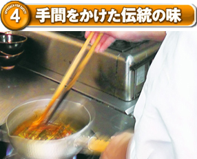

いつまでも変わらぬ美味しさ（伝統の味）をお届けするため、自社工場における加工工程、店鋪調理工程の簡略化は行わず、昔ながらの調理工程（技法）で作られております。
そのこだわりは店鋪調理にも根付いており、単純な盛りつけに留まらず、焼く、炒める、漬ける、冷やすなどの一手間を加えて守られております。いつまでも変わらぬ味こそ、安全・安心。
守り続けられている伝統の味を一部ご紹介いたします。
そのこだわりは店鋪調理にも根付いており、単純な盛りつけに留まらず、焼く、炒める、漬ける、冷やすなどの一手間を加えて守られております。いつまでも変わらぬ味こそ、安全・安心。
守り続けられている伝統の味を一部ご紹介いたします。
◆焼肉のたれ
創業以来、自然の美味しさにこだわり保存料を使わない無添加のタレ。
じっくりと時間をかけて煮込んだタレは旨味が凝縮され、自然な味わいが肉本来の旨みを引き立たせます。
また、肉の種類によって配合が異なる専用の「モミダレ」を使用、ゴマ油で肉の旨味を閉じ込めた後、「モミダレ」とニンニク、ネギ、ゴマなどの薬味で揉む事によって風味、味わいを一層、引き立てております。
じっくりと時間をかけて煮込んだタレは旨味が凝縮され、自然な味わいが肉本来の旨みを引き立たせます。
また、肉の種類によって配合が異なる専用の「モミダレ」を使用、ゴマ油で肉の旨味を閉じ込めた後、「モミダレ」とニンニク、ネギ、ゴマなどの薬味で揉む事によって風味、味わいを一層、引き立てております。
◆本場韓国直輸入キムチ
本場韓国で育ったキムチ専用の白菜、韓国製唐辛子、韓国西海岸の天日塩、韓国居昌の天然水を使い、改良に改良を加えた秘伝のレシピで漬け込んだ伝統の味となっております。
◆焼肉店の本格スープ
長時間煮込んだ牛骨、牛筋のダシスープを使用。
さっぱりとした口当たりの中に残る鮮やかなコクが一層の旨味を引き立てます。
さっぱりとした口当たりの中に残る鮮やかなコクが一層の旨味を引き立てます。
◆手切り食肉加工
技能試験を取得した店鋪従業員が手切り加工を実施し、新鮮で美味しいお肉をお届けしております。
肉の目（スジ）を見極めながら1枚1枚丁寧に切っておりますので、柔らかさと歯ごたえが違います。
※工場で加工を行っている食肉もございます。
肉の目（スジ）を見極めながら1枚1枚丁寧に切っておりますので、柔らかさと歯ごたえが違います。
※工場で加工を行っている食肉もございます。
◆ナムル
スープやビビンバなど、焼肉にはかかせないナムルは、五味五色の考えに基づいた素材と鮮度にこだわった自慢の一品で、食感とゴマの風味が違います。